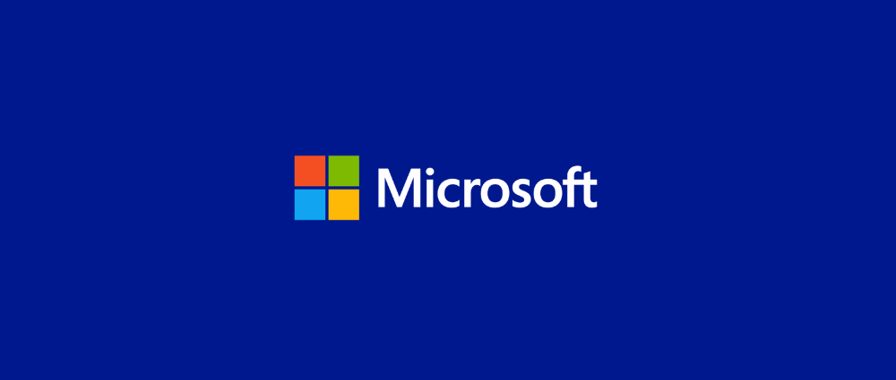

News
In this page you will find latest news on cyber security
Microsot takes down global zombie bot network
Microsoft has said it was part of a team that dismantled an international
network of zombie bots. The network called Necrus infected over nine million
computers and is one of the world's largest botnet. Necrus was responsible for
multilpe criminal scams including stealing personal information ans sending fake
pharmaceutical emails. Tom Burt, Microsofts vice president for customer and trust
said in a blog post that the takedown of necurs was the result of eight year of
planning and co-ordination with partners in 35 countries.
China demands US response over CIA hacking claims

The china foreign minstry has asked the US for a "clear explanaiton" after the CIA
claim of hacking targets in china for atleat 11 years. The allegations ware made by
Qihoo, a well -known cyber-secuity firm based in Beijing. The company said it has found
evidence in malware suggesting the CIA had targeted airlines, petrol companies and government
agencies. Among other alleged targets of the hacking campaign were internet firms, scientific
institutions and energy companies.
Smart camera and baby monitor warning given by UK's cyber-defender